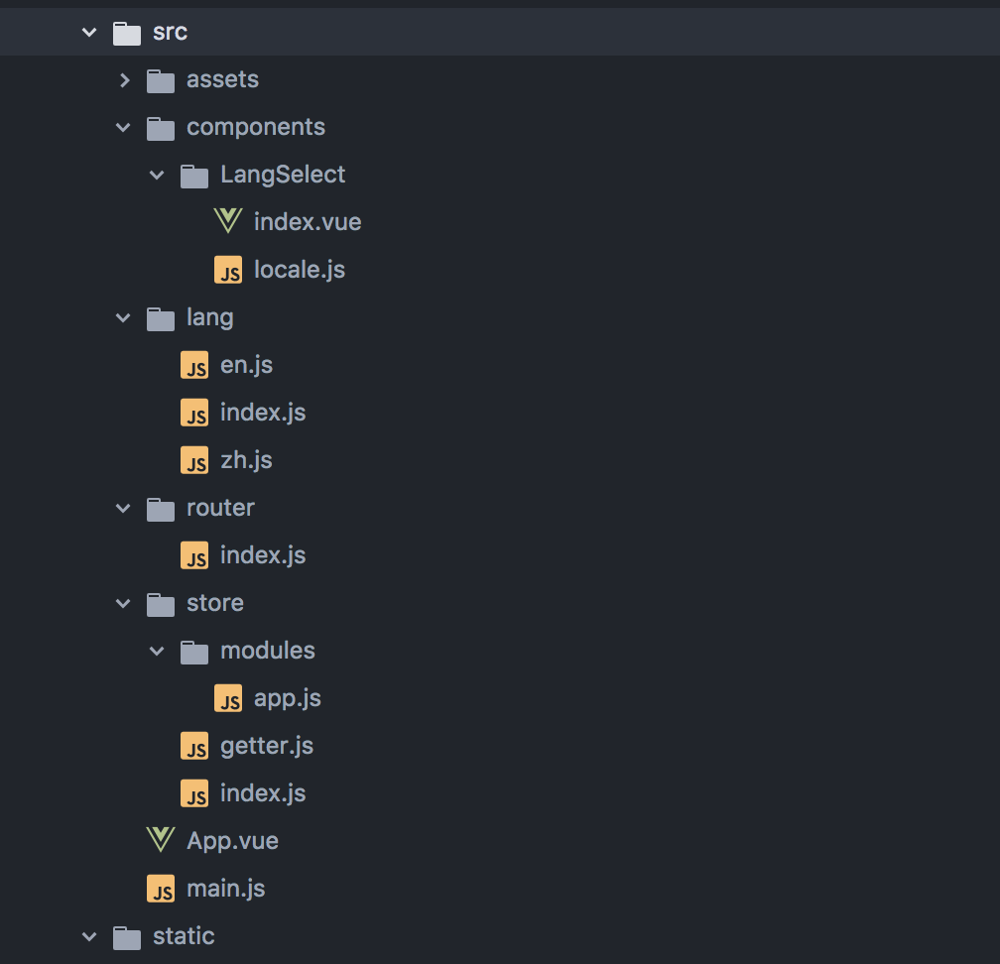
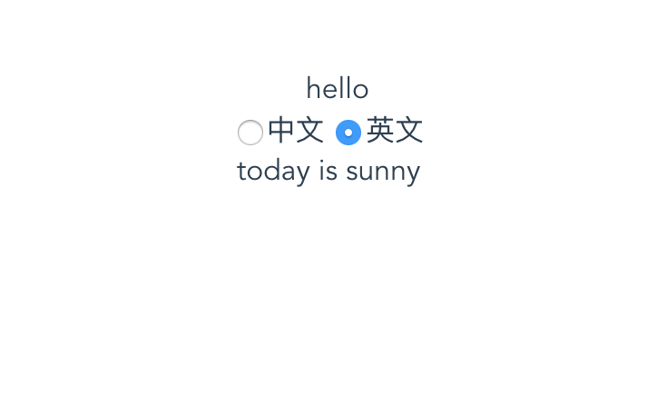
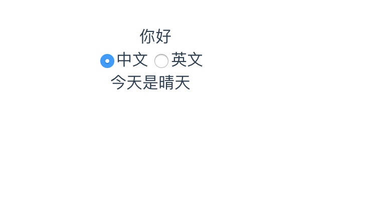

概述
在一些系统开发中，为了满足更多的用户需求，系统都需要具备支持多种语言切换的功能。本文以一个实例演示在Vue中使用i18n来解决多语言切换的问题。
项目地址：i18nDemo
百度词条:
i18n（其来源是英文单词 internationalization的首末字符i和n，18为中间的字符数）是“国际化”的简称。在资讯领域，国际化(i18n)指让产品（出版物，软件，硬件等）无需做大的改变就能够适应不同的语言和地区的需要。对程序来说，在不修改内部代码的情况下，能根据不同语言及地区显示相应的界面。 在全球化的时代，国际化尤为重要，因为产品的潜在用户可能来自世界的各个角落。通常与i18n相关的还有L10n（“本地化”的简称）。
准备工作
新建一个Vue项目
1 | vue init webpack i18n |
项目结构

添加Vuex、Cookie、i18n
1 | npm install --save vuex |
实例
项目中添加store
在src目录下新建一个store文件夹，里面包含：
- index.js
- getter.js
- modules
- app.js
在index.js中实例化store，在getter.js中添加一个language属性。
在app.js中设置一个修改cookie中的language属性的方法setLanguage：1
2
3
4
5
6
7
8
9
10
11
12
13
14
15
16
17
18import Cookies from 'js-cookie'
const app = {
state: {
language: Cookies.get('language') || 'en'
},
mutations: {
SET_LANGUAGE: (state, language) => {
state.language = language
Cookies.set('language', language)
}
},
actions: {
setLanguage ({ commit }, language) {
commit('SET_LANGUAGE', language)
}
}
}
export default app
i18n实例
在src目录下新建一个lang文件夹，里面包含:
- index.js
- en.js
- zh.js
其中en.js和zh.js分别存放项目中的英语文本信息和中文文本信息，本案例直接写在了LangSelect目录下的locale.js中，所以这两个文件内容为空。
index.js1
2
3
4
5
6
7
8
9
10
11
12
13
14
15
16
17
18
19
20
21
22
23
24
25
26import Vue from 'vue'
import VueI18n from 'vue-i18n'
import elementEnLocale from 'element-ui/lib/locale/lang/en' // element-ui lang
import elementZhLocale from 'element-ui/lib/locale/lang/zh-CN'// element-ui lang
import enLocale from './en'
import zhLocale from './zh'
import Cookies from 'js-cookie'
Vue.use(VueI18n)
const messages = {
en: {
...enLocale,
...elementEnLocale
},
zh: {
...zhLocale,
...elementZhLocale
}
}
const i18n = new VueI18n({
locale: Cookies.get('language') || 'en', // set locale
messages // set locale messages
})
export default i18n
说明：在修改语言的时候修改的是i18n.locale属性，所以不是必须使用cookie。
新建组件
在commponents文件夹下新建一个LangSelect文件夹，里面包含index.vue和locale.js
- index.vue:
1 | <!-- 界面部分使用elementUI --> |
页面中有一个tittle和一个content文本信息，点击两个radio选项，使用store里的action中的setLanguage方法进行语言的切换。
1 | <script> |
- locale.js
1 | export default { |
运行
运行npm run dev，浏览器打开localhost:8080可以看到：

默认是英文状态，点击中文radio切换：
